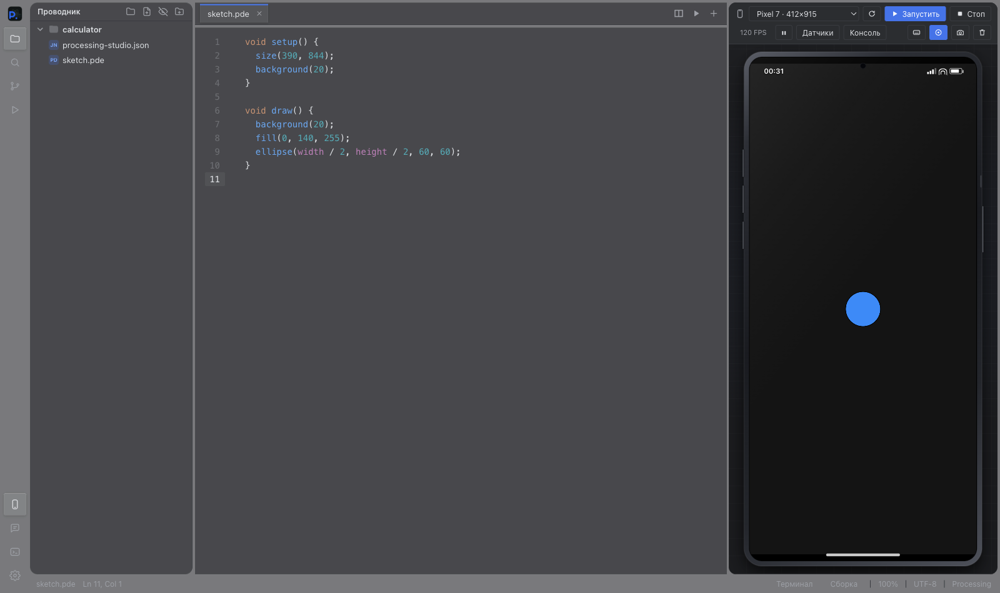
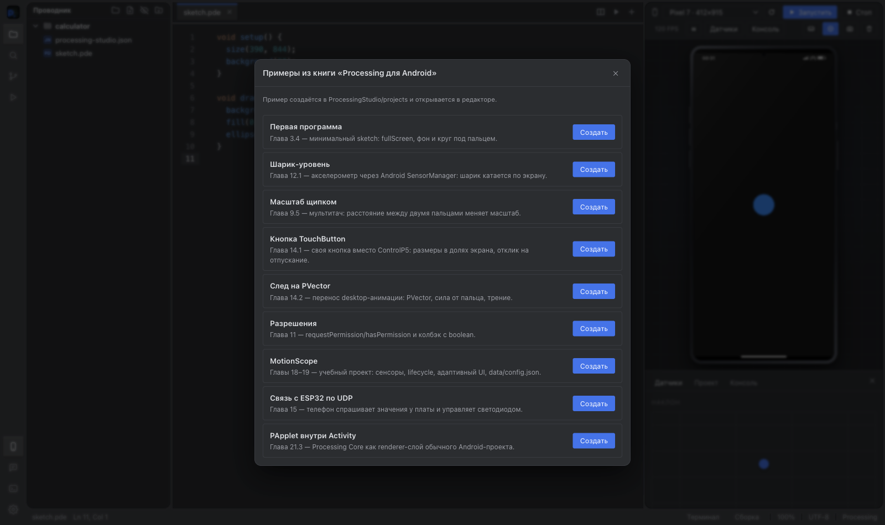

Нужен Processing for Android?
Для экспорта нет. Processing Studio включает свой Java-рантайм PApplet в создаваемый проект.
Processing Studio: полноценная IDE для мобильных приложений на Processing. Меняйте скетч, запускайте его рядом с кодом, затем экспортируйте Android-проект.
Получить IDE
У телефона есть касания, ориентация, датчики и разрешения. В обычном окне Processing эти сценарии неудобно проверять. Здесь они доступны рядом с кодом, пока идея ещё меняется.
Создайте .pde, используйте знакомые setup() и draw(). Несколько вкладок работают как один скетч.
Запустите скетч в модели телефона. Проверьте касания, размер экрана, поворот и показания датчиков.
Выберите параметры приложения. IDE создаст структуру Gradle, исходники и ресурсы для Android Studio.
Переключайтесь между моделями iPhone, Pixel, Galaxy и iPad или задайте свой размер. Проверяйте портретный и альбомный режимы, мультитач, клавиатуру и индикатор касаний.
Акселерометр, гироскоп, компас, наклон, тряска, ориентация и местоположение. Показания меняются прямо во время запуска.

Мастер спрашивает только то, что действительно нужно для старта: имя, package name, версии SDK, ориентацию и разрешения.

AndroidManifest.xml, настройки Gradle, MainActivity, ресурсы и исходники приложения.
В проект включается собственный Java-рантайм PApplet для рисования, касаний, датчиков и разрешений.
Откройте созданный проект в Android Studio, соберите через Gradle и проверьте на настоящем устройстве.
Помимо эмулятора здесь есть инструменты для ежедневной работы с проектом.
Подсветка синтаксиса, автодополнение Processing и Android API, умные отступы, поиск и замена. Ошибки указывают на строку файла.
Проводник, несколько вкладок, разделение редактора, поиск по проекту, Git и история изменений. Вкладки восстанавливаются после перезапуска.
Конфигурации запуска, несколько терминалов и скрипты package.json. Открывайте Markdown, изображения и Jupyter-ноутбуки.
Светлая и тёмная темы, темы в JSON, размер шрифта и интерфейса. На macOS есть полупрозрачный режим окна.
Processing Studio основана на существующем редакторе FrogeeCodeIDE. Если вы уже работали в нём, здесь всё выглядит знакомо: файлы, вкладки, поиск, терминалы и настройки. Рядом с ними появились инструменты для мобильной разработки на Processing: PDE-скетчи, эмулятор телефона и экспорт Android-проекта.
Посмотреть FrogeeCodeIDE
В галерее есть касания, акселерометр, масштабирование двумя пальцами, разрешения и адаптивный интерфейс. Отдельные примеры показывают обмен данными с ESP32 по UDP и работу с PApplet внутри Activity.
Для экспорта нет. Processing Studio включает свой Java-рантайм PApplet в создаваемый проект.
Эмулятор быстро запускает скетч внутри IDE. Итоговую сборку и тест на устройстве выполняют из экспортированного проекта через Android Studio и Gradle.
Да. Проводник работает с файлами проекта, а редактор поддерживает несколько вкладок и разделённый экран.
Версия 4.4.0. Бесплатная IDE с открытым исходным кодом под GPL 2.0.
Это версии самой IDE для настольных систем. Выберите пакет для своего компьютера.
| Система | Процессор | Пакет | Размер | Скачать |
|---|---|---|---|---|
| macOS | Apple Silicon | DMG | 750 МБ | Загрузить |
| macOS | Intel | DMG | 753 МБ | Загрузить |
| Windows | x64 | EXE | 692 МБ | Загрузить |
| Linux | x64 | AppImage | 625 МБ | Загрузить |
| Linux | x64 | DEB | 622 МБ | Загрузить |
IDE экспортирует проект. Финальную сборку выполняют инструменты целевой платформы.
| Цель | Экспорт из IDE | Финальная сборка |
|---|---|---|
| Android | Gradle-проект | APK через Android Studio |
| iOS | Пока нет | Не поддерживается |